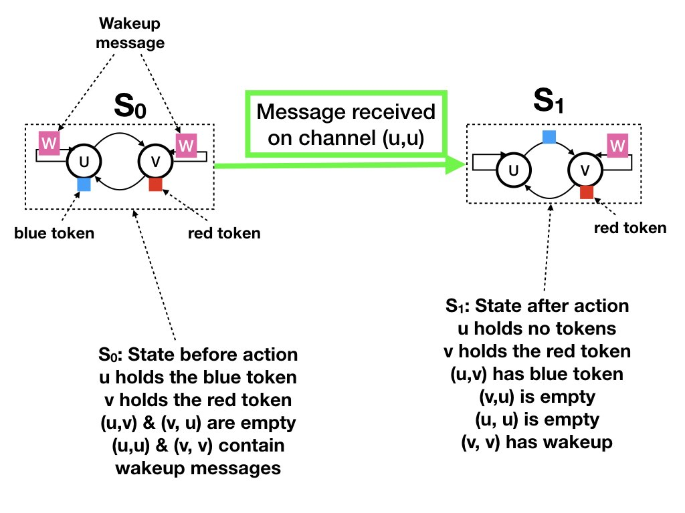
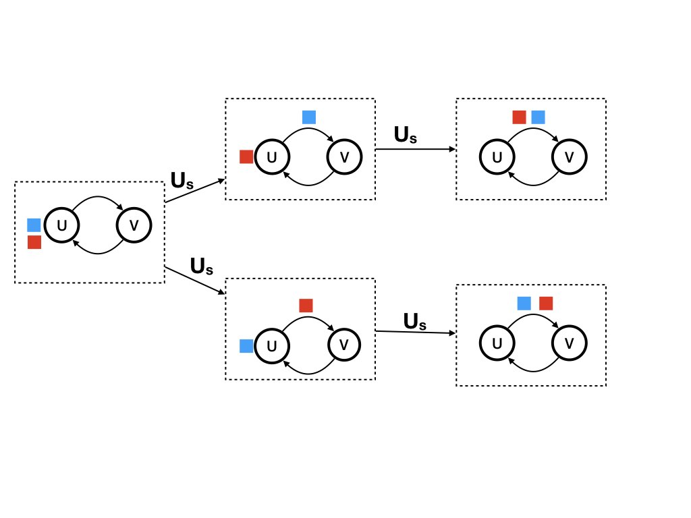
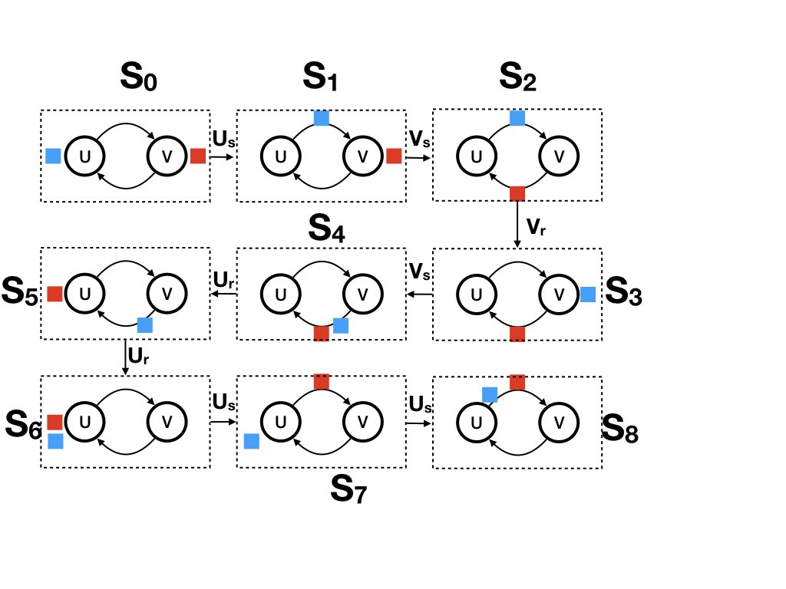

This example is of a system with two agents u and v, and four
channels.
The channels are between the agents and from each agent to itself.
The system has a red token and a blue token.
A token is either at an agent or in a channel between the agents.
An agent sends a "wakeup" message to itself when the agent has a
token. Wakeup messages are shown as W in the figure.
The figure shows two states. The diagram on the left-hand side shows
state S0 in which agent u holds the blue token and agent w holds the
red token. In S0 there is a wakeup message from each agent to
itself.
The diagram on the right-hand side shows state S1 in which the blue
token is in the channel (u, v), and the red token is at v. There is
a wakeup message from v to itself.
The transition from S0 to S1 occurs when agent u receives a wakeup
message from itself. In the transition agent u sends the blue token
to v.

Fig.1: Example of a State Transition
The event that describes the transition is shown in the figure
below.
The inputs to the event are the state of u before the transition and
the message received by u that causes the transition.
The outputs of the event are the state of u after the transition and
for each agent the sequence of messages sent by u to the agent in
the transition.
The input and output agent edges are labeled with the states of the
agent before and after the transition, respectively.
The message edges are labeled with the contents of the message.
(Here the wakeup message is identified by a star.)
Fig.2: Example of an Event
State Diagrams
State diagrams are labeled directed graphs in which the vertices
represent states and the labeled edges represent state
transitions.
The label of an edge is the channel on which the message is received
that causes the state transition. This diagram shows some (but not
all) of the states and state transitions.
The label "U_s" on an edge represents a transition in which agent U
sends a message.
The label "V_r" on an edge represents a transition in which agent V
receives a message.
Fig.3: Example: State Diagram
Nondeterministic Receive Functions
Throughout this course we will restrict attention to receive
functions that are deterministic. This example illustrates that
the model allows for nondeterministic functions. If agent u holds
a red token and a blue token when it receives a wakeup message the
agent can send either the red or the blue token. The upper line
shows transitions in which agent u first sends the blue and then
the red token. The lower line shows transitions in which u sends
the red token before the blue one.
This example merely illustrates nondeterminacy in receive functions.
We will use deterministic functions in the future.

Fig.4: Example: Nondeterminism in Execution of Receive
Function
Computations
The figure below shows a computation consisting of the sequence of
states [S0, S1, S2, ..., S8].
A computation is a path through the state diagram.
You can see the path in the figure below in the graph shown in figure 3.

Fig.5: Example: Computation
The State of the System at a Consistent Cut
The state of the system at a consistent cut (past, future) is the
state after all the steps in past and before any of the steps in
future.
The state at a consistent cut is illustrated by the labels of edges
that cross the boundary separating past from future.
The figure below shows the dataflow graph for computation [S1, ..,
S6].
The initial and final events are labeled 0 and N respectively (rather
than init and fini as we normally do).
The steps of the computation are ordered from left to right in the
figure.
So, the consistent cut (past, future) where past consists of steps [1,
.., i] is shown in the diagram by a vertical line between steps i and
i+1, where past is the set of steps to the left of the vertical line.
Let's look at the state at the consistent cut (past={0,0, 1, 2, 3},
future={4, 5, 6, N, N}). The state of agent u at the cut is the label
of the agent edge for u that crosses the vertical line separating past
from future. The label of this edge is E for "empty."
The state of the agent edge for v is the blue token.
The state of a channel at a consistent cut is the sequence of message
edges of messages sent on the channel that cross the boundary
separating past from future. For example, the state of the channel (u,
u) is the empty sequence because there is no message edge from u to
itself that crosses the boundary.
The state of the channel from v to u is the red token.
Fig.6: Example: System States at Consistent Cuts
The dataflow graph of the figure above and the figure below are
identical.
The steps of the dataflow graph in the figure above are ordered from
left to right in accordance with the computation [0, 0, 1, 2, 3, 4, 5,
6, N, N] while the ordering of the steps from left to right in the
figure below is [0, 0, 2, 1, 3, 5, 4, 6, N, N].
This ordering helps us to pictorially represent consistent cuts in the
lower figure that are different from those in the upper figure.
For example, the state S'_1 at the consistent cut (past = {0, 0, 2}, future
= {..}) is different from the state S_1 at the consistent cut (past = {0, 0, 1}, future
= {..}).
The states S_2 at the consistent cut (past = {0, 0, 1, 2}, future =
..) is the same in both computations.
Suppose each agent logs its own computation, then can we tell whether
S_1 or S'1 occurred?
No we cannot, and it doesn't matter.
Fig.7: Example: System States at Consistent Cuts in a
Different Computation
The figure below shows the dataflow graph of the previous two figures
with steps ordered from left to right in the sequence 0, 0, 1, 2,..,
6, N, N. And the figure shows the boundary of the consistent cut (past = {0, 0, 2},
future = {..}) as a curved line. The state at this consistent cut is
also given by the labels of edges that cross the boundary.
Fig.9: Example: Consistent Cuts of the Dataflow Graph:
Past/Future
K. Mani Chandy,
Emeritus Simon Ramo Professor,
California Institute of Technology